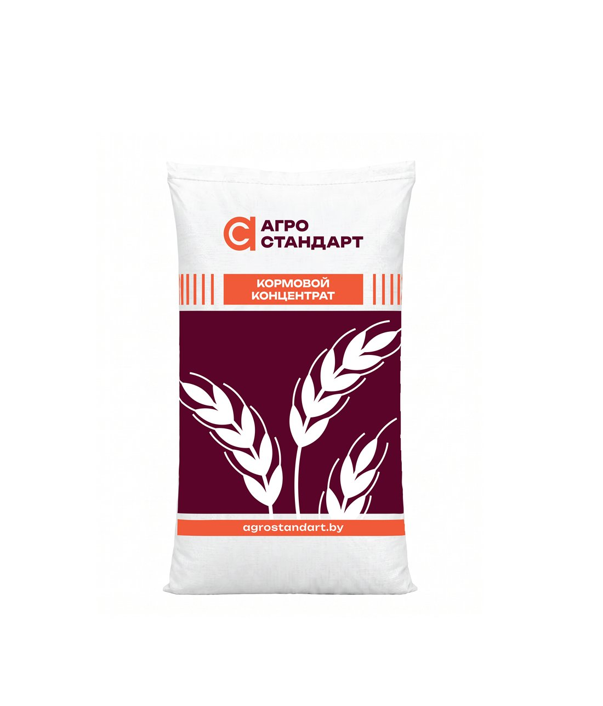
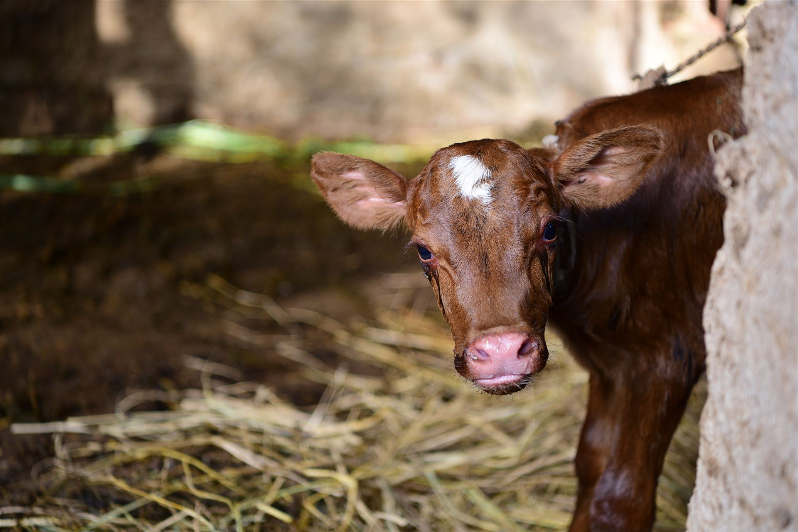
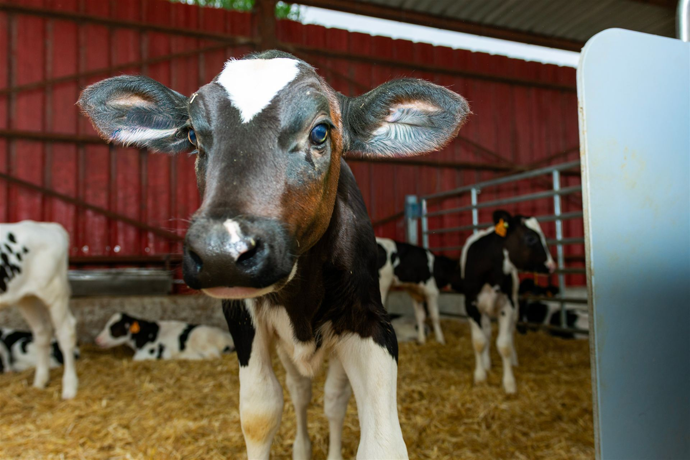
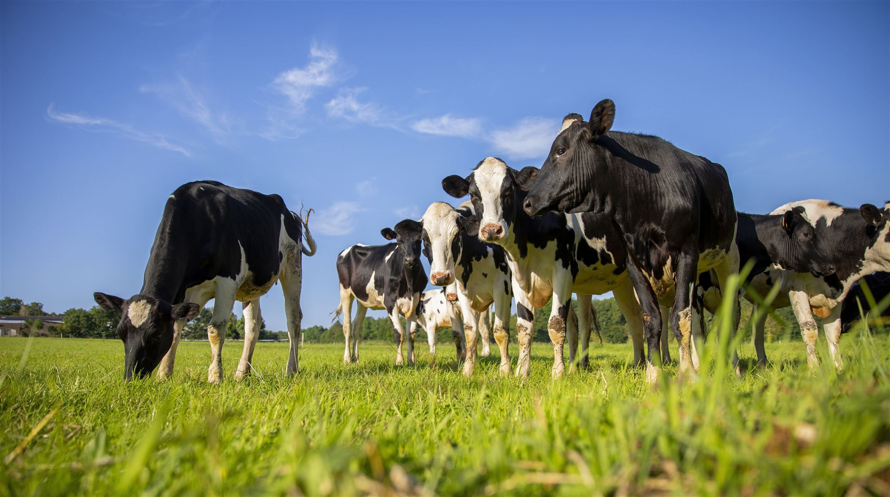

Программа кормления · КРС
Кормовые концентраты для молодняка КРС от 10 до 400 дней — от становления рубцового пищеварения до финального откорма.

В первые месяцы жизни телята интенсивно развиваются: происходит становление рубцового пищеварения и формирование иммунной системы. Важнее всего здесь развитие преджелудков — точнее, микрофлоры, которая играет ключевую роль в процессах брожения.
Наиболее активно ворсинки растут в момент перехода на растительные корма. Но если в этот момент у телёнка недоразвит рубец, животное будет отставать в развитии и не достигнет в дальнейшем высокой продуктивности.
Цикл кормления · три фазы
Схема: фазы показаны равными по ширине
Как это покупается
Если белковое сырьё у вас своё. Концентрат работает как минерально-витаминная, ферментная и пробиотическая часть рациона. Шрот хлопковый вы ставите сами: 15 % на фазе 2 и 0–5 % на откорме.
Если белок закрываем мы. Исполнение с вводом 20 % на фазе 2 и 10 % на откорме уже содержит белковую часть. В хозяйстве остаётся только зерновая группа — 80 % и 90 % соответственно.
Линейка программы

Фаза 1 · стартБВМКК-1-к Гранулированный концентрат для мюслей. Молочный белок, льняной жмых, повышенный витамин A. Фаза 2 · развитиеБВМКК-2-к Живые ферментно-пробиотические культуры заселяют рубец полезной микрофлорой, стимулируют развитие преджелудков. Фаза 3 · откормБВМКК-3-к Финальная и самая длинная фаза: рубец сформирован, задача концентрата — поднять отдачу с каждого килограмма рациона.Производственный опыт
Опыт проводился на одном из крупнейших комплексов по откорму КРС в республике. Бычкам на откорме к основному рациону скармливали 4 кг комбикорма в сутки, собранного из 95 % зерна и 5 % нашего БВМКК-3-к.




Следующий шаг
Скажите, сколько голов на откорме, какой сейчас среднесуточный привес и чем кормите. Вернём рецептуру по фазам и стоимость на голову в сутки.